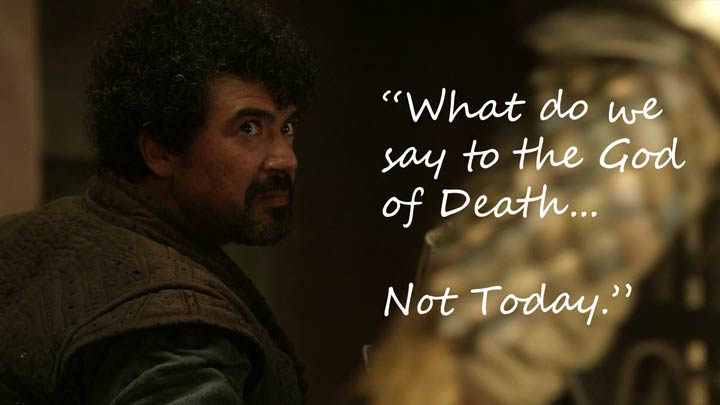
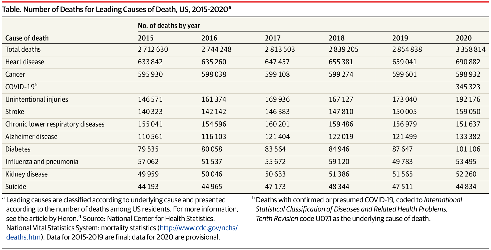
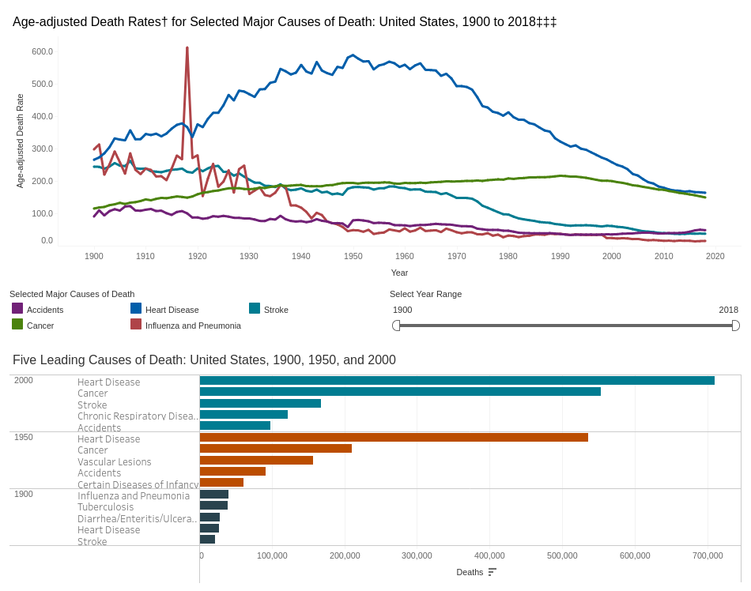

Do More Covid Research.Html.Html.Html
Do More Covid Research.Html.Html
Do More Covid Research.Html
Do More Covid Research
Research to avoid death is amazing. More people should do it.

As an American in the current decade, heart failure and cancer are about tied to get me eventually. In the USA, war and famine have not been common causes of death, for as long as anyone has been alive. Hope it stays that way. Aside from the work of police, military, and medical staff to keep people safe and healthy, the next tier is obviously research.
Well that and now plague prevention. It is a big deal. There are 50+ years of solving useful problems I would miss out on, if I just up and died. Writing a good piece of work, like a thesis, is a decade long passion project. Many people get to make one of these novel contributions that are not seen anywhere in all 8 billion other peoples' experience. And I could have 70+ years or 100+ of doing stuff like that. In theory we could remove just about everything but death from accidents.
The Covid death numbers seem low, compared to billions of living people, but it was the third most life threatening thing out there to Americans. The mRNA vaccines put a nice dent in the death rate. MRNA vaccines are a cool technology. More people should be programming MRNA to fight off these inconvenient little shits. But I imagine Covid will continue to mutate. With a high population and low sanitation standards of some countries, pandemics may become more common.

Cardiovascular problems, on the other hand, have a long history of successfully being combatted with medicine. Cardiovascular research is heavily funded. As I get older I will continue to follow medical advice on keeping the pipes working. I imagine working in this field will be good for a few more decades, if not more.
Cancer is a bit more tricky, but also leads into a massive wealth of medical science. Fixing the cancer problem requires knowing a lot more about how our cell do things. As seen by the chart above, cardio issues are decreasing over time, up to the point where they match cancer. Cancer has barely moved up or down. That is what is next on the medical scientist's chopping block. Studying how to control cells would lead to solving other problems as well. Check out the SENS foundation.
I definitely want to live as long as possible. If millions of people could enjoy medical science as much as I enjoy math. We all just may live forever.
Compiled: Sat 23 Oct 2021 11:13:34 AM EDT
Compiled: Sun 17 Jul 2022 01:39:59 PM EDT
Compiled: Sun 17 Jul 2022 01:44:56 PM EDT